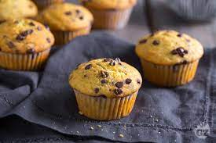

Chocolate Chip Muffins

Description
These chocolate chip muffins are simply
delicious.
You won't believe how easy and quick they are to make!
Ingredients
- 3/4 cups of milk
- 1/3 cup vegetable oil
- 1 Egg
- 2 cups of flour
- 1/2 cup white sugar
- 3 teaspoons baking powder
- 1/2 teaspoon salt
- 3/4 cup mini semi-sweet chocolate chips
- 3 tablespoons white sugar
- 2 tablespoons brown sugar
Directions
- Step 1: Preheat the oven to 400 degrees F (200 degrees C). Grease a 12-cup muffin tin or line cups with paper liners.
- Step 2: Combine milk, oil, and egg in a small bowl until well blended.
Combine flour, 1/2 cup sugar, baking powder, and salt together in a large bowl, making a well in the center.
Pour milk mixture into well and stir until batter is just combined; fold in chocolate chips.
- Step 3: Spoon batter into the prepared muffin cups, filling each 2/3 full.
Mix 3 tablespoons white sugar and brown sugar together in a small bowl; sprinkle on tops of muffins.
- Step 4: Bake in the preheated oven until tops spring back when lightly pressed, about 20 to 25 minutes. Cool in the tin briefly, then transfer to a wire rack. Serve warm or cool completely.